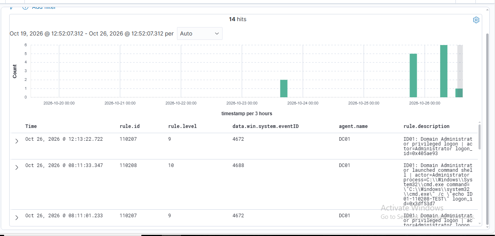
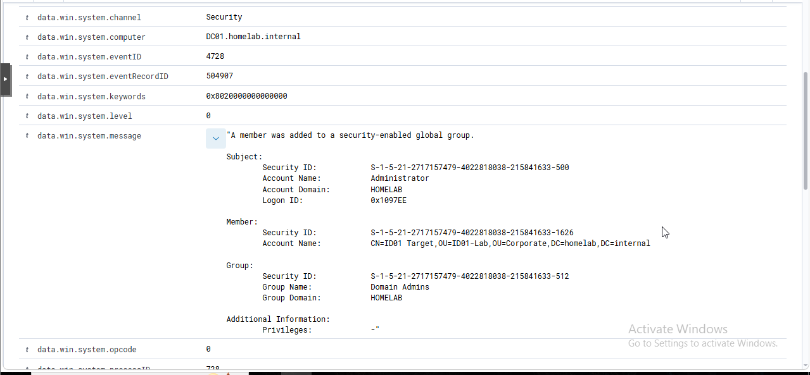
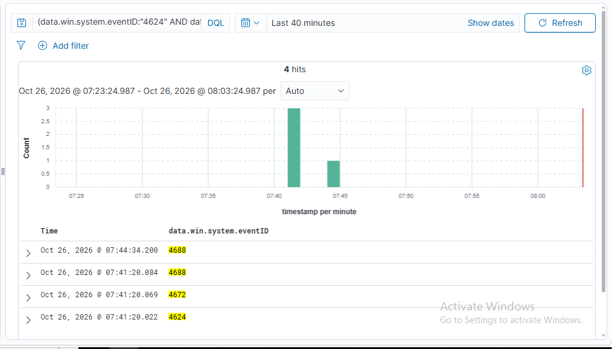
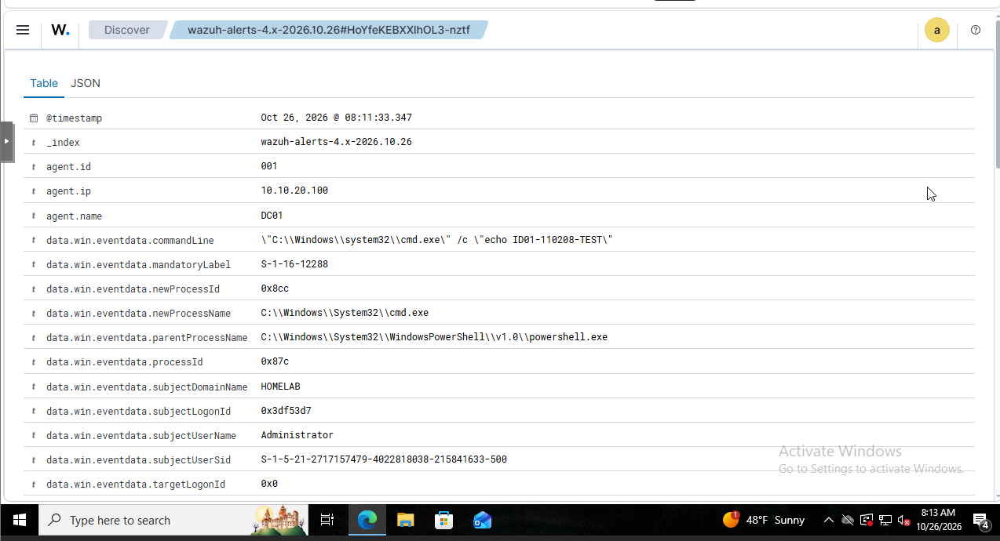
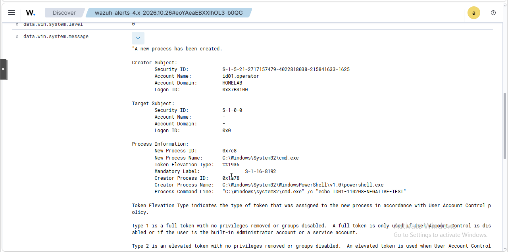

04 / ID01
Active Directory Identity Abuse & Privilege Monitoring
I built and validated a Wazuh detection layer for high-value Active Directory changes, with enough context to answer two questions quickly: who performed the action, and which identity or privilege was affected?
Balcom Insurance is a fictional company I use to give the lab a realistic structure. Every account and administrative action shown here was created specifically for controlled testing in my personal homelab.
THE OBJECTIVE
Make identity changes useful to an investigator
Active Directory records important security events, but a raw event ID is only the starting point. I wanted a focused monitoring layer that elevated risky actions, preserved actor-versus-target context, and connected privileged activity across a single logon session.
The project covered account creation and deletion, enable and disable actions, password resets, Domain Admins membership changes, privileged logons, and command-shell activity by the built-in domain Administrator. I validated each path with controlled actions and kept the test identities separate from normal lab accounts.
LAB & DETECTION DESIGN
Delegated administration, centralized telemetry, focused rules
DC01 in the homelab.internal domain generated the Security events and forwarded them through its Wazuh agent to WAZUH01. I created a dedicated ID01-Lab organizational unit, a delegated operator, a normal target identity, and a disposable lifecycle account.
| Identity | Purpose | Security boundary |
|---|---|---|
| id01.operator | Performed delegated account-management tests | Not a Domain Admin; scoped to the ID01 OU |
| id01.target | Received controlled privileged-group changes | Normal user before and after testing |
| id01.rule01 | Disposable lifecycle test account | Deleted during cleanup |
| Administrator | Generated privileged logon and process activity | Matched by the domain RID-500 SID suffix |
Using a delegated operator was important. It proved that ordinary account administration could be attributed without turning the test account into a Domain Admin. A denied interactive logon on DC01 also confirmed that the delegation did not silently grant broader logon rights.
DETECTION COVERAGE
Nine rules organized around identity risk
| Rule | Level | Event | Detection purpose |
|---|---|---|---|
| 110200 | 8 | 4720 | Account created |
| 110201 | 7 | 4722 | Account enabled |
| 110202 | 10 | 4724 | Password reset |
| 110203 | 7 | 4725 | Account disabled |
| 110204 | 9 | 4726 | Account deleted |
| 110205 | 12 | 4728 | Member added to Domain Admins |
| 110206 | 10 | 4729 | Member removed from Domain Admins |
| 110207 | 9 | 4672 | RID-500 Administrator privileged logon |
| 110208 | 10 | 4688 | RID-500 Administrator command shell |
The descriptions surface the actor, target or member, group, logon ID, process, and command line where those fields are available. Rules 110205, 110206, 110207, and 110208 also map the tested behavior to MITRE ATT&CK T1098, T1531, T1078.002, and T1059 as appropriate.
VALIDATION METHOD
Positive tests, correlation, and one deliberate non-alert
- I exercised the complete account lifecycle with
id01.operatoracting onid01.rule01and verified actor-target attribution in Wazuh. - I added
id01.targetto Domain Admins as Administrator, confirmed the high-severity alert, then removed the membership and verified the removal alert. - I joined Event 4624, 4672, and 4688 records by a shared logon ID to reconstruct logon → special privileges → process creation.
- I launched a marked
cmd.exeprocess as the built-in Administrator and confirmed rule 110208 captured its parent, child, command line, SID, and logon ID. - I repeated the same process pattern as
id01.operator. Raw Event 4688 telemetry arrived, but rule 110208 correctly stayed quiet because the actor SID did not end in RID 500.
SELECTED EVIDENCE
Four views that show the detection working end to end
The webpage keeps the evidence concise. The PDF includes the complete rule matrix, additional lifecycle records, cleanup verification, and final Wazuh health check.










TROUBLESHOOTING & LESSONS
The project improved when I tested the boundaries
A lifecycle query returned no 4720 result
I verified the time range and searched by the target identity instead of assuming the event was absent. The surrounding records exposed the actual test sequence and helped me separate a search problem from an audit problem.
The delegated operator could not log on to DC01
The runas attempt returned Windows error 1385 because the account did not have that logon right. I kept the least-privilege boundary intact and moved the operator test to IT-PC01 instead of broadening DC01 access for convenience.
Raw process telemetry existed, but the custom rule did not fire
That was the intended negative control. The operator event used a SID ending in 1625, while rule 110208 requires the built-in Administrator SID ending in 500.
The investigation crossed more than one day
I expanded the Wazuh search to seven days and saved a reusable ID01 investigation view. That produced a defensible project-wide result set without relying on a narrow “last 24 hours” window.
How I would investigate a real alert
- Validate the actor, target, group, domain controller, timestamp, and record ID.
- Determine whether the action matches an approved change and the actor’s normal scope.
- Pivot on the actor’s logon ID to review authentication, assigned privileges, and follow-on processes.
- Check for persistence or escalation: additional group changes, password resets, new accounts, or remote activity.
- Contain only after preserving evidence and confirming that the activity is unauthorized or unsafe.
OUTCOME & LIMITS
A validated identity-monitoring baseline, not just a list of event IDs
ID01 produced a reusable Wazuh ruleset and investigation workflow for the highest-value identity actions in this lab. All positive paths fired as designed, the Administrator command-shell negative control stayed quiet for a non-RID-500 account, and final cleanup confirmed that no test account retained Domain Admin membership.
The project demonstrates identity-security engineering, detection development, Windows event analysis, and incident-investigation thinking. It also builds directly on the centralized telemetry from SOC01 and the validation discipline developed in DET01.
PROJECT OUTCOME
ID01 is complete, validated, and cleaned up.
The full PDF contains the architecture, nine-rule matrix, validation evidence, correlation workflow, negative control, troubleshooting notes, response approach, and limitations.